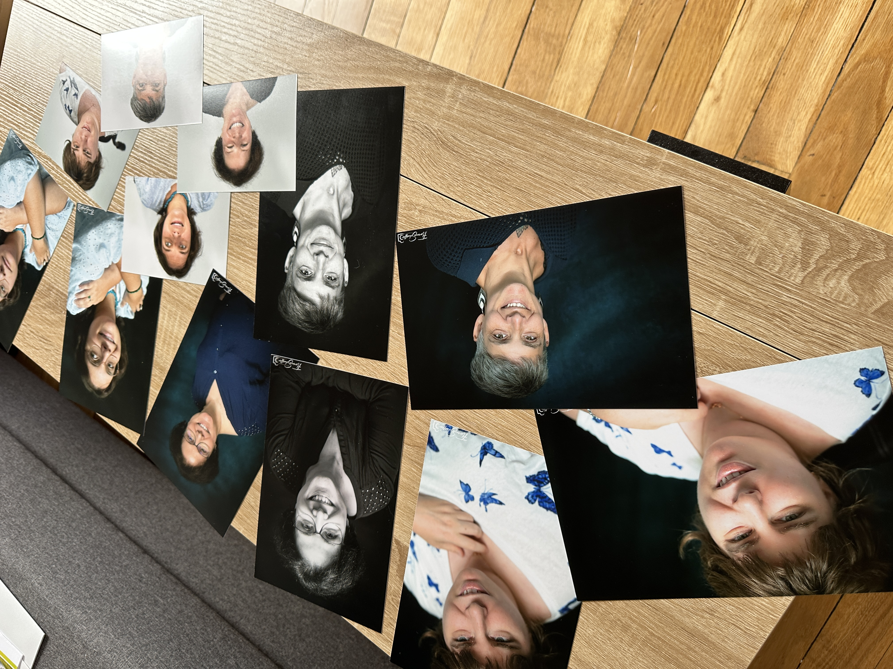

Ateliers & journées
Des formats plus longs, pour aller plus loin. Seule ou en groupe, autour de la mise en valeur, de l'estime de soi ou d'une transition de vie — chaque expérience est pensée pour vous permettre de reprendre votre place.
Mise en valeur & révélation de soi

Une journée ou demi-journée complète autour de votre image, dans un cadre bienveillant. Pas pour correspondre à une norme — pour découvrir ce qui vous rend unique et oser le porter.
Se renseigner →Découvrez votre style personnel, apprenez à vous mettre en valeur selon vos envies et non une mode.
Sublimez votre beauté naturelle grâce aux conseils et techniques de notre maquilleuse experte.
Révélez votre personnalité à travers une coiffure soigneusement adaptée à votre visage et vos envies.
Immortalisez votre transformation lors d'une séance photo lumineuse et bienveillante avec Florence.
Option : soin des mains & mise en beauté des ongles — une touche finale pour compléter cette parenthèse de douceur.
Les dates et tarifs varient selon les formules choisies.
Contactez-nous pour construire votre journée ensemble.
Ateliers thématiques
En groupe, autour d'une thématique qui vous touche. Ces ateliers associent différentes approches — sophrologie, méditation, art-thérapie, photo-thérapie — pour une expérience sensible et incarnée.
Se reconnecter à soi
Explorer le regard que vous portez sur vous, renforcer l'estime personnelle et vous découvrir autrement — en groupe, avec douceur.
Écouter son corps
Mieux comprendre ses besoins, développer une relation plus douce et bienveillante à son corps, et sortir des injonctions alimentaires.
Traverser les changements
Un espace pour comprendre les transformations du corps, partager son vécu et vivre cette étape avec davantage de douceur et de soutien.
Les ateliers ont lieu sur inscription, à des dates programmées. Laissez vos coordonnées pour recevoir les prochaines dates et le programme détaillé.
Recevoir les prochaines dates →